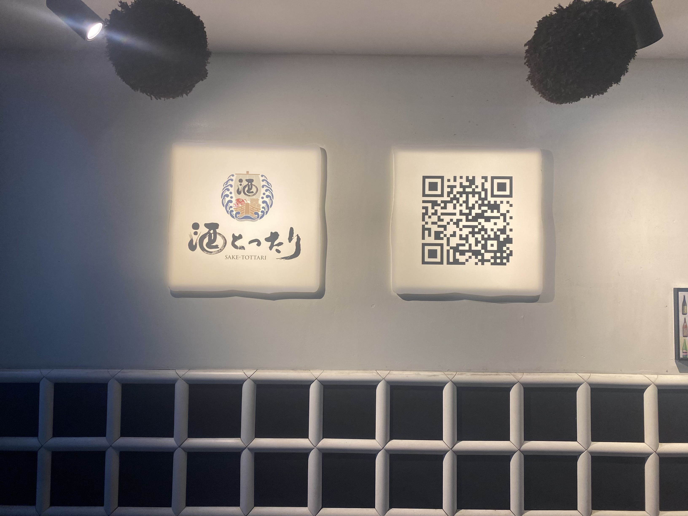
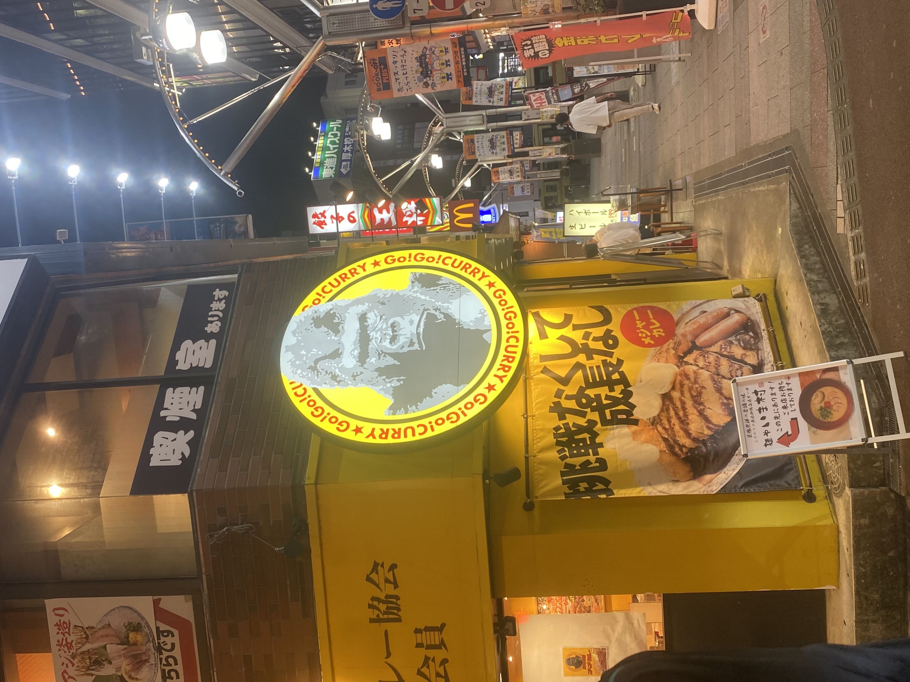
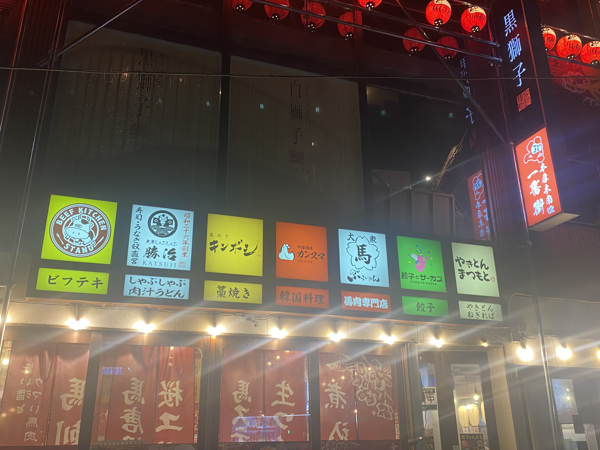

酒とったり

10月19日に横浜駅西口方面で撮影。
一見とてもシンプルなデザイン。鯛のイラストや酒といった文字からどのようなお店なのか誰もが簡単に想像できる。
このシンプルなデザインだからこそ、となりのQRコードが引き立つ。
ゴーゴーカレー

10月19日に本厚木駅北口方面で撮影。
動物園でしか見ないようなゴリラが他のお店と比較して圧倒的な存在感をお店に与える。
ゴリラを中心として円状に店名が記載されている。「挑戦なくして成長なし」ここにもインパクトを感じる。
ビーフキッチンスタンド

10月19日に本厚木駅北口方面で撮影。
ひとつの一室に複数店舗があるような場所で3色で統一された看板の色から店内に一体感があるのではないかと感じとれると考える。